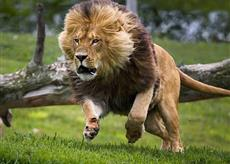
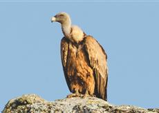
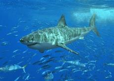
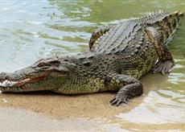
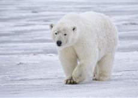

|  |
| LEON:El ‘Rey de la Selva’ Vive principalmente en África y se alimenta de mamíferos de gran tamaño, como son los ñus y las cebras, sus presas favoritas, aunque también devoran carroña. La encargada de proveer el alimento es la hembra (la que no tiene melena). Trabajan en equipo y pueden correr a grandes velocidades para atrapar su comida. |
|  |
| BUITRE:Sus hábitos alimentarios están basados en la localización de las presas a través de la vista, que es muy aguda. A diferencia de otras aves rapaces los buitres suelen comer grandes animales muertos abandonados, por ejemplo, por los felinos. Sus picos gruesos les permiten rasgar la piel y escarbar entre los huesos para extraer toda la carne. |
|  |
| TIBURON:Son grandes depredadores y pueden llegar a medir 18 metros de largo (el tiburón ballena, que se alimenta de plancton). El tiburón blanco, por ejemplo, puede capturar mamíferos marinos, atún rojo, tortugas, cetáceos y focas. Cazan al amanecer y al atardecer, y también puede consumir carroña de ballena. |
|  |
| COCODRILO:Gracias a sus grandes mandíbulas pueden devorar especies de mamíferos de gran tamaño en cuestión de minutos. Los cazan por sorpresa cuando se acercan al agua para beber, y es que el cocodrilo es muy rápido en cualquier medio acuático. Cuando toma una presa con la fuerza de sus grandes fauces lo arrastra para ahogarlo y luego devorarlo. |
|  |
| OSO POLAR:A diferencia de los demás de su especie, el oso polar se alimenta exclusivamente de carne. Es de los animales carnívoros más grandes del mundo y vive en zonas heladas del hemisferio norte. Su comida favorita son las crías de focas, aunque también se alimenta de peces. En un solo día puede consumir hasta 30 kg de comida. Cabe señalar que no bebe agua, sino que ingiere los fluidos de sus presas. |